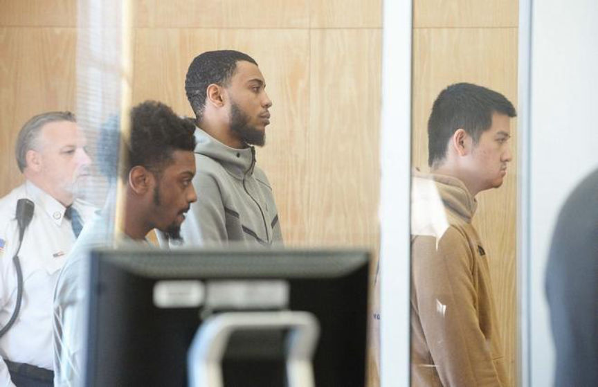
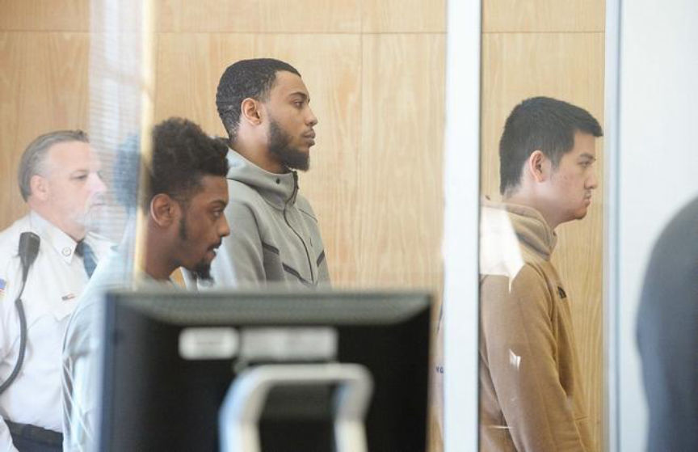

Ecstasy and Ketamine Vendor "EastSideHigh" Busted in Massachusetts
Three recently arrested drug dealers in Massachusetts sold online under the username “EastSideHigh,” evidence revealed during the arrest indicates. The men allegedly sold hundreds of thousands of dollars worth of ecstasy and ketamine.
Summary
Three men were arrested in Brockton, Massachusetts, for selling a massive amount of MDMA and Ketamine to customers through darkweb marketplaces.
Police seized more than 24 pounds worth of drugs.
MDMA: 6,200 Grams Ketamine: 5,000 Grams
All three men faced trafficking charges for only ketamine and MDMA.
One of the three had an additional Class B distribution charge. Ecstasy.
Suspects allegedly had at least $200,000 in Bitcoin they needed to convert to USD. They were arrested on March 27 – two days prior to this article’s publication.
So they ran a massive operation and sold only ketamine and MDMA.
Only one vendor on the darkweb sells massive quantities of MDMA (ecstasy pills) and Ketamine: EastSideHigh. EastSideHigh opened a Wallstreet Market account on March 13, 2019, and already have 414 orders. The three listings include:
Pure Ketamine S isomer sugar A+; Pure MDMA Crystal; Philip Plein 250mg;
EastSideHigh has not signed into WallStreet Market for three days as of this article’s publication. Orders have been finalized by their customers today, however. On Dream, EastSideHigh has completed 360 transactions and has the following listings:
28G Pure MDMA Crystal; 50 Orange “Dices” 180-210mg MDMA Pressed Pills; 2G Pure MDMA Crystal; 100 Orange “Dices” 180-210mg MDMA Pressed Pills, etc.

Until they resurface, I think the Brockton/Stoughton case involves the operator(s) of the EastSideHigh vendor account. And it would be wise to avoid purchasing from EastSideHigh until the vendor proves otherwise.
The Arrest and Case
STOUGHTON — Three Brockton men are accused of using the dark web and accepting payments via Bitcoin in a large-scale drug network that was run out of Stoughton, but distributed across the country.
In total, police say they seized more than 24 pounds worth of drugs – 6,200 grams of MDMA, or ecstasy, and 5,000 grams of ketamine.
The three men: Binh Le, 22, Allante Pires, 22, and Steven McCall, 23 – are now being held on $50,000 bail each, facing charges of trafficking in 200 grams or more of ketamine and ecstasy. Le faces an additional charge of distributing a Class B substance.
No vendor except EastSideHigh sells only MDMA and ketamine at anywhere near the same scale.

Assistant District Attorney Michael Pirrello said the men were arrested Wednesday following an investigation by state police detectives assigned to the Norfolk County district attorney’s office, federal agents assigned to the U.S. Postal Service and Stoughton police, which began in January.
“What was happening was that narcotics customers were facilitating these transactions via the dark web, typically using Bitcoin as the source of payment,” Pirrello said Thursday afternoon during the trio’s arraignment in Stoughton District Court.
Pirrello requested between $250,000 and $500,000 cash bail for the defendants.Controlled Purchases
An undercover officer made two separate purchases (on Jan. 24 and Feb. 14) for ecstasy over the “dark web,” Pirrello said. After facilitating the purchases, Le placed the packages containing drugs into U.S. Postal Service mailboxes, he said. Police say the undercover purchases resulted in the seizure of five ecstasy pills and two grams of the drug.
Undercover detectives also conducted surveillance on an office space at 1749 Central St. in Stoughton, identified as a storage location for the drugs, on Feb. 27, Pirrello said. Le was seen exiting the building carrying trash to a dumpster and the bag was later recovered by police and determined to contain 1,200 grams of ecstasy, he said.Undercover Currency Exchanger
“As this investigation progressed, a postal agent acting in an undercover capacity had begun communication with Binh Le regarding a potential Bitcoin for cash exchange,” according to a state police report filed in court. “Le had informed the agent that he was attempting to potentially obtain US currency totaling $200,000 in exchange for Bitcoin.”
Investigators then arranged a meeting with Le at the Hampton Inn hotel in Norwood on Wednesday about noon, Pirrello said. Undercover detectives witnessed Le and Pires arrive first at the commercial storage space in Stoughton, with Le exiting the building carrying a money counter, then driving to the hotel in a black Mercedes, he said.
Le was seen going into the hotel, while Pires remained in the vehicle, Pirrello said. The exchange of the money for Bitcoin was conducted and both men were arrested, he said. Police say they found a key on the men for the commercial space.Raid at the Storage Unit
Detectives then arrived at the Stoughton storage space, armed with a search warrant for that location, as well as Le’s home at 285 Menlo St. in Brockton. McCall was inside the unit when detectives arrived and attempted to escape out a side door, but was arrested, Pirrello said.
Inside the office space, detectives located and seized 5,000 grams (11 pounds) of ketamine, also known as “Special K,” an animal tranquilizer, and 5,000 grams of ecstasy, Pirrello said. They also located packaging materials, two digital scales, two heat-sealing devices, a pill press and $114,700 in cash, he said.In Court
All three men pleaded not guilty during their arraignment on Thursday afternoon.
Attorney Joseph Krowski Jr., representing Pires, requested his client be held on $2,500 bail. He said Pires, who has no criminal history, has strong ties to the community, including attending a local community college, and lives with his parents in Brockton.
“No disrespect to Mr. Le, but it seems the investigation focuses on Mr. Le,” Krowski said. “It seems that all points of contact are with Mr. Le. It is that.”
Attorney Tim Foley, representing McCall, requested bail be set between $250 and $1,000. He said his client has no criminal history and may have just been in the wrong place at the wrong time, pointing out that McCall’s name doesn’t come up until the last sentence of the police report filed for arraignment purposes.
Attorney Joe Eisenstadt, representing Le, asked for bail to be set at $5,000, saying his client only has one prior entry on his criminal record for trespassing.
Judge Dan O’Malley set bail at $50,000 for all three defendants. If bail is posted, the men will have to wear GPS-monitoring bracelets.
All three men are due back in court on May 3 for probable cause hearings.
“This was a strong example of local, state and federal law enforcement working together effectively,” said Norfolk County District Attorney Michael Morrissey. “Norwood police, Stoughton police, Brockton police, state police and federal authorities had to work together to make this happen. And it did.”
Source: Enterprise News
Summary
Three men were arrested in Brockton, Massachusetts, for selling a massive amount of MDMA and Ketamine to customers through darkweb marketplaces.
So they ran a massive operation and sold only ketamine and MDMA.
EastSideHigh Vendor Listing
Until they resurface, I think the Brockton/Stoughton case involves the operator(s) of the EastSideHigh vendor account. And it would be wise to avoid purchasing from EastSideHigh until the vendor proves otherwise.
The Arrest and Case
STOUGHTON — Three Brockton men are accused of using the dark web and accepting payments via Bitcoin in a large-scale drug network that was run out of Stoughton, but distributed across the country.
In total, police say they seized more than 24 pounds worth of drugs – 6,200 grams of MDMA, or ecstasy, and 5,000 grams of ketamine.
The three men: Binh Le, 22, Allante Pires, 22, and Steven McCall, 23 – are now being held on $50,000 bail each, facing charges of trafficking in 200 grams or more of ketamine and ecstasy. Le faces an additional charge of distributing a Class B substance.
No vendor except EastSideHigh sells only MDMA and ketamine at anywhere near the same scale.

Three Men Behind the EastSideHigh Account
Assistant District Attorney Michael Pirrello said the men were arrested Wednesday following an investigation by state police detectives assigned to the Norfolk County district attorney’s office, federal agents assigned to the U.S. Postal Service and Stoughton police, which began in January.
“What was happening was that narcotics customers were facilitating these transactions via the dark web, typically using Bitcoin as the source of payment,” Pirrello said Thursday afternoon during the trio’s arraignment in Stoughton District Court.
Pirrello requested between $250,000 and $500,000 cash bail for the defendants.Controlled Purchases
An undercover officer made two separate purchases (on Jan. 24 and Feb. 14) for ecstasy over the “dark web,” Pirrello said. After facilitating the purchases, Le placed the packages containing drugs into U.S. Postal Service mailboxes, he said. Police say the undercover purchases resulted in the seizure of five ecstasy pills and two grams of the drug.
Undercover detectives also conducted surveillance on an office space at 1749 Central St. in Stoughton, identified as a storage location for the drugs, on Feb. 27, Pirrello said. Le was seen exiting the building carrying trash to a dumpster and the bag was later recovered by police and determined to contain 1,200 grams of ecstasy, he said.Undercover Currency Exchanger
“As this investigation progressed, a postal agent acting in an undercover capacity had begun communication with Binh Le regarding a potential Bitcoin for cash exchange,” according to a state police report filed in court. “Le had informed the agent that he was attempting to potentially obtain US currency totaling $200,000 in exchange for Bitcoin.”
Investigators then arranged a meeting with Le at the Hampton Inn hotel in Norwood on Wednesday about noon, Pirrello said. Undercover detectives witnessed Le and Pires arrive first at the commercial storage space in Stoughton, with Le exiting the building carrying a money counter, then driving to the hotel in a black Mercedes, he said.
Le was seen going into the hotel, while Pires remained in the vehicle, Pirrello said. The exchange of the money for Bitcoin was conducted and both men were arrested, he said. Police say they found a key on the men for the commercial space.Raid at the Storage Unit
Detectives then arrived at the Stoughton storage space, armed with a search warrant for that location, as well as Le’s home at 285 Menlo St. in Brockton. McCall was inside the unit when detectives arrived and attempted to escape out a side door, but was arrested, Pirrello said.
Inside the office space, detectives located and seized 5,000 grams (11 pounds) of ketamine, also known as “Special K,” an animal tranquilizer, and 5,000 grams of ecstasy, Pirrello said. They also located packaging materials, two digital scales, two heat-sealing devices, a pill press and $114,700 in cash, he said.In Court
All three men pleaded not guilty during their arraignment on Thursday afternoon.
Attorney Joseph Krowski Jr., representing Pires, requested his client be held on $2,500 bail. He said Pires, who has no criminal history, has strong ties to the community, including attending a local community college, and lives with his parents in Brockton.
“No disrespect to Mr. Le, but it seems the investigation focuses on Mr. Le,” Krowski said. “It seems that all points of contact are with Mr. Le. It is that.”
Attorney Tim Foley, representing McCall, requested bail be set between $250 and $1,000. He said his client has no criminal history and may have just been in the wrong place at the wrong time, pointing out that McCall’s name doesn’t come up until the last sentence of the police report filed for arraignment purposes.
Attorney Joe Eisenstadt, representing Le, asked for bail to be set at $5,000, saying his client only has one prior entry on his criminal record for trespassing.
Judge Dan O’Malley set bail at $50,000 for all three defendants. If bail is posted, the men will have to wear GPS-monitoring bracelets.
All three men are due back in court on May 3 for probable cause hearings.
“This was a strong example of local, state and federal law enforcement working together effectively,” said Norfolk County District Attorney Michael Morrissey. “Norwood police, Stoughton police, Brockton police, state police and federal authorities had to work together to make this happen. And it did.”
Source: Enterprise News